Costa Blanca · Alicante
Inmuebles en venta en Alicante
Pisos nuevos en la ciudad, viviendas junto a la playa y villas de golf justo a las afueras. Estos son los inmuebles que vendemos hoy en Alicante y alrededores, con una breve guía de las zonas y lo que cuesta de verdad comprar.
- 15inmuebles en venta en la ciudad
- desde 211.000 €un piso nuevo
- unos 20 minal aeropuerto de Alicante-Elche
- Postiguetla playa urbana, en pleno centro
En venta ahora
Inmuebles en venta en Alicante
Sobre todo pisos nuevos de 2 a 4 dormitorios, muchos con piscina comunitaria, plaza de garaje y trastero. Los precios son los de hoy; pregúntenos por la disponibilidad actual.
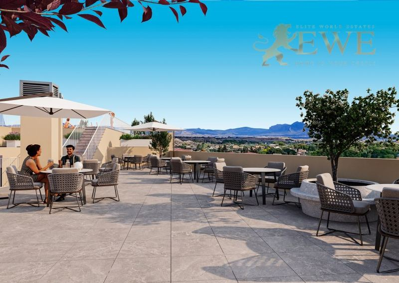
Entrega abr 2028Alicante
Stylish apartment 6 km from Albufereta beach in Alicante
211.000 €
2 dormitorios · 2 baños · 63 m²Ref. EWE3658
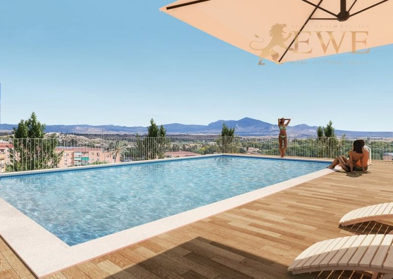
Entrega abr 2028Alicante
Spacious apartment 6 km from the beach in Alicante
245.000 €
3 dormitorios · 2 baños · 79 m²Ref. EWE3659
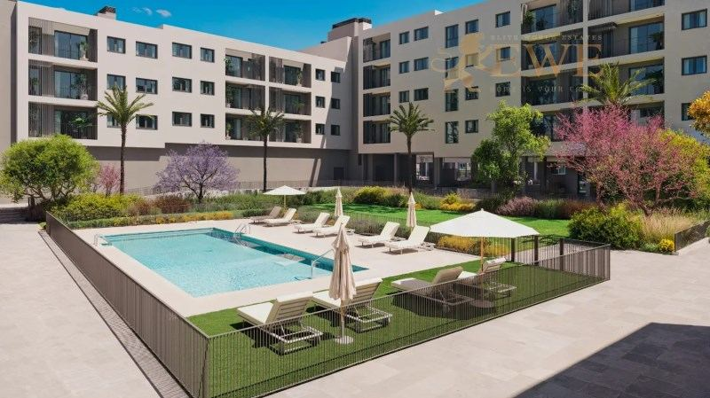
Entrega 2º semestre 2028Alicante
New apartments 3 km from the port in the center of Alicante
256.500 €
2 dormitorios · 1 baño · 51 m²Ref. EWE3714
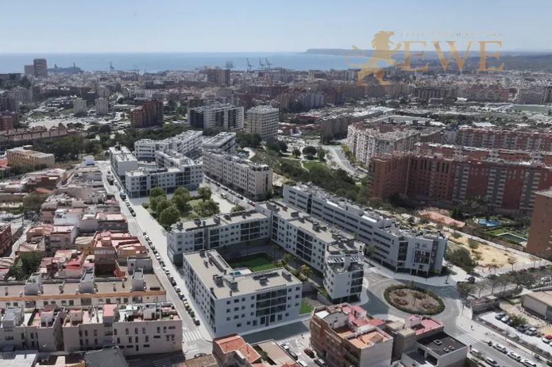
Entrega 2º semestre 2028Alicante
New apartment project in the center of Alicante
267.500 €
2 dormitorios · 2 baños · 55 m²Ref. EWE3715
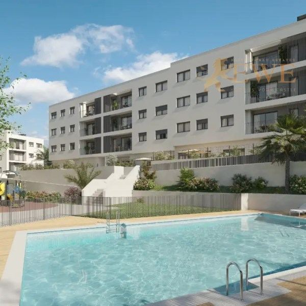
Entrega inicio 2027Alicante
Brand new apartment in Alicante
272.400 €
2 dormitorios · 2 baños · 60 m²Ref. EWE3486
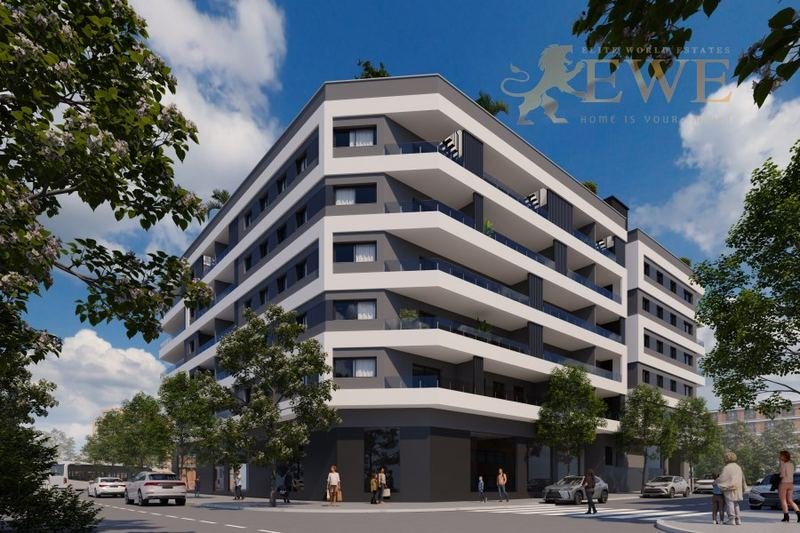
Alicante
Magnificent flat 2 km from Postiguet Beach in Alicante
284.000 €
2 dormitorios · 65 m²Ref. EWE3637
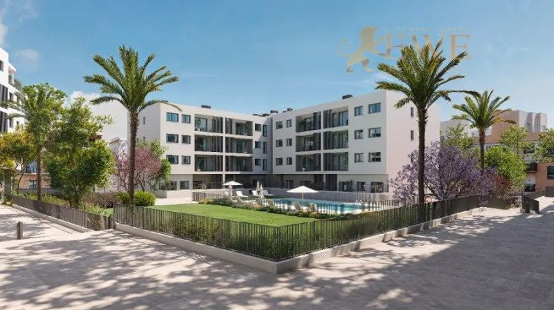
Entrega 2º semestre 2028Alicante
New apartments 3 km from the port in the center of Alicante
296.500 €
3 dormitorios · 2 baños · 64 m²Ref. EWE3716
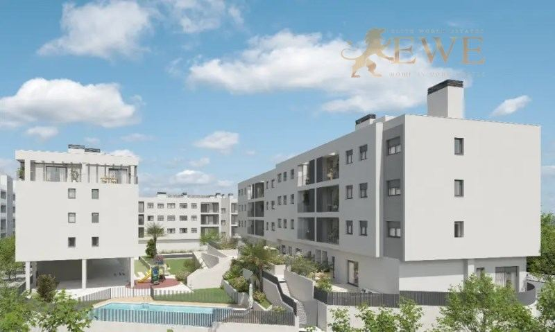
Entrega inicio 2028Alicante
New apartment in Alicante
301.900 €
3 dormitorios · 2 baños · 65 m²Ref. EWE3451
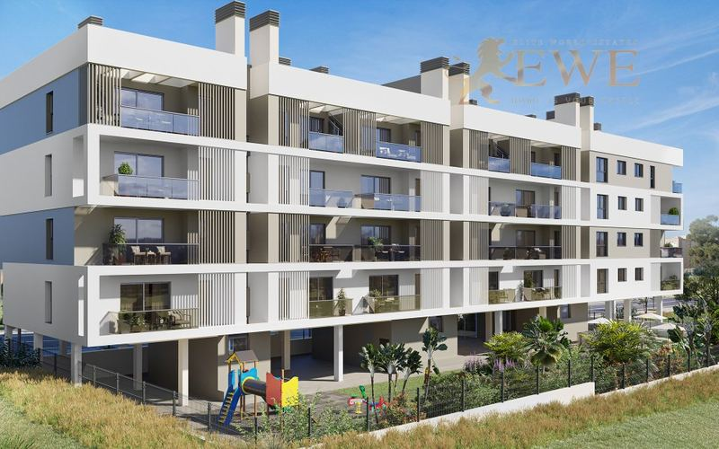
Alicante
New project of modern residential flats in Alicante
331.000 €
2 dormitorios · 2 baños · 63 m²Ref. EWE3386
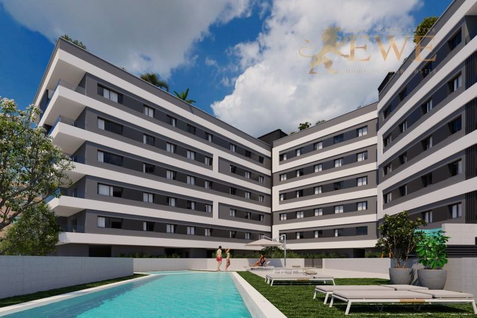
Alicante
New flat near Postiguet beach in the centre of Alicante
349.900 €
3 dormitorios · 2 baños · 90 m²Ref. EWE3638
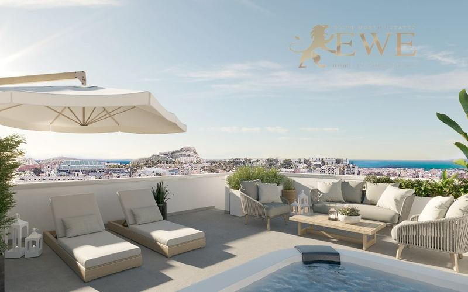
Alicante
Excellent apartment in Alicante
399.000 €
3 dormitorios · 2 baños · 80 m²Ref. EWE3385
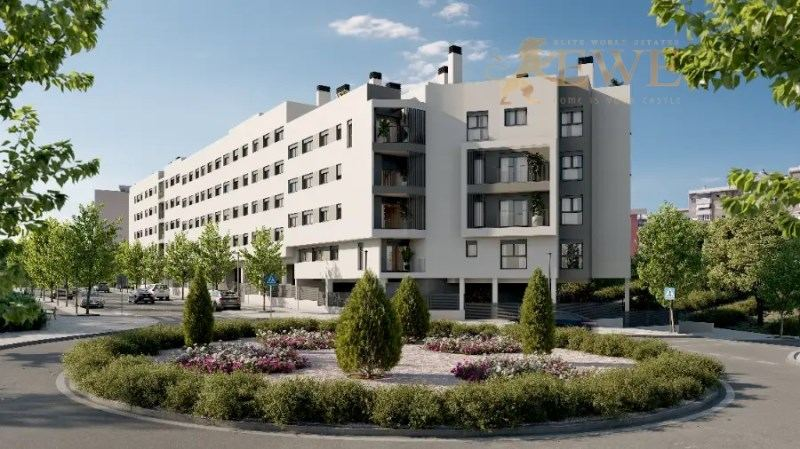
Alicante
Modern apartment in a privileged location in Alicante
406.500 €
3 dormitorios · 2 baños · 79 m²Ref. EWE3390
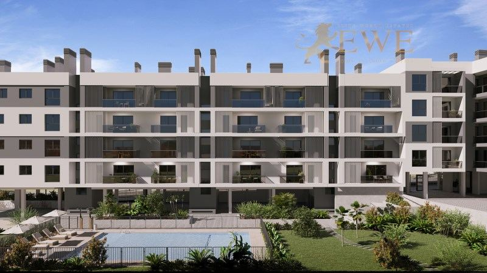
Alicante
Modern apartment in Alicante
410.000 €
3 dormitorios · 2 baños · 73 m²Ref. EWE3485
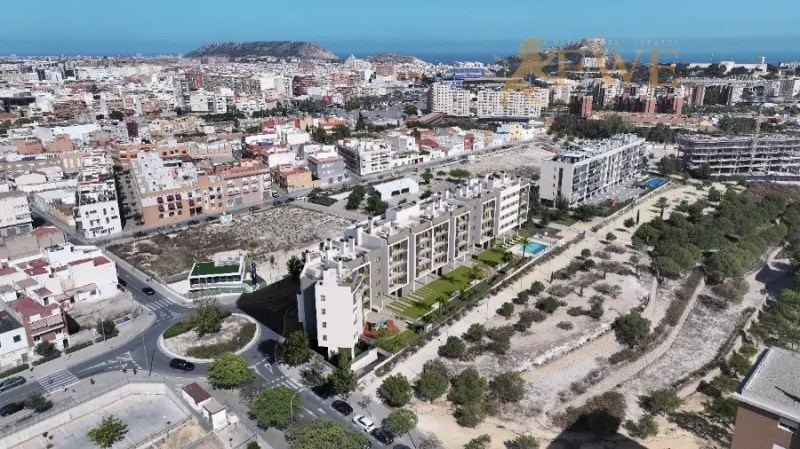
Alicante
Apartment in a privileged location in Alicante
456.500 €
4 dormitorios · 2 baños · 90 m²Ref. EWE3488
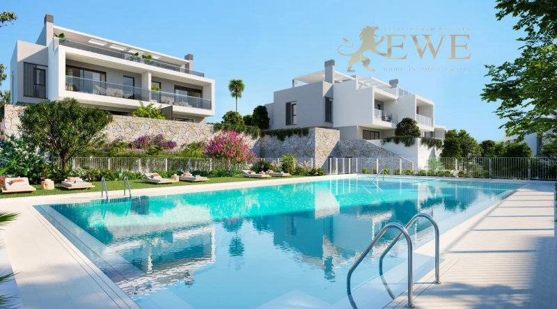
Alicante
Exclusive terraced house in Cabo de las Huertas, Alicante
1.225.000 €
4 dormitorios · 4 baños · 187 m²Ref. EWE2297
Muy cerca
Cerca de Alicante: El Campello, Sant Joan, Mutxamel
A diez o veinte minutos del centro: viviendas junto al mar en El Campello y Sant Joan, y villas y pisos junto a los campos de golf de Bonalba y Alicante Golf en Mutxamel.
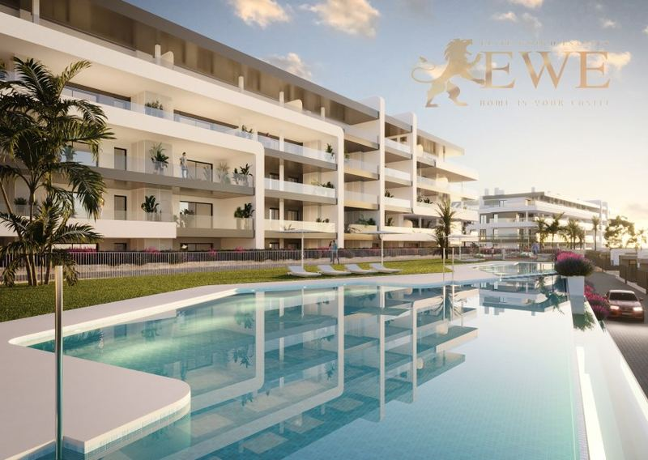
Mutxamel
Apartment with a view of golf course in El Campello
282.000 €
2 dormitorios · 2 baños · 62 m²Ref. EWE2427
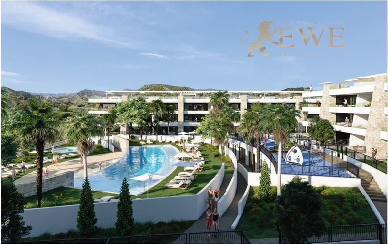
Monforte del Cid
Golf View Apartments at Font del Llop
310.000 €
2 dormitorios · 2 baños · 78 m²Ref. EWE3571
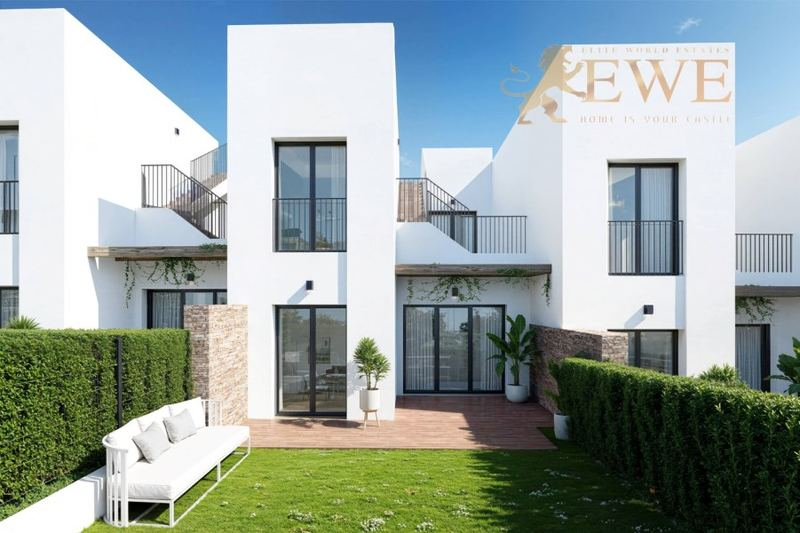
Entrega dic 2026Monforte del Cid
Charming house near the golf course in Monforte del Cid
365.000 €
3 dormitorios · 3 baños · 171 m²Ref. EWE3465
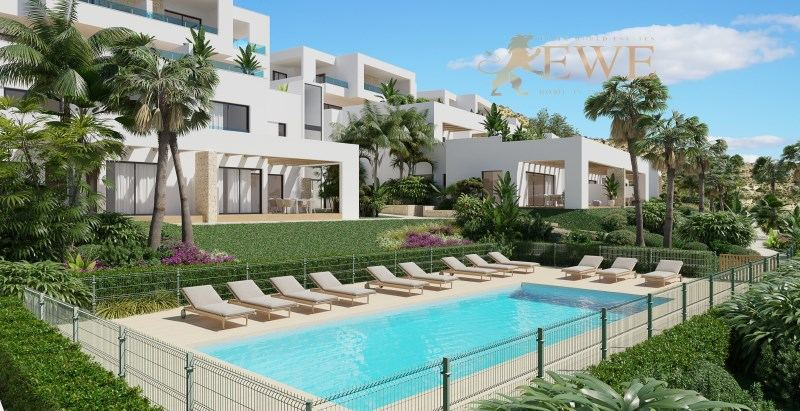
Llave en manoMonforte del Cid
Apartment with views of the mountains and golf course in Monforte del Cid
395.000 €
2 dormitorios · 2 baños · 104 m²Ref. EWE2226
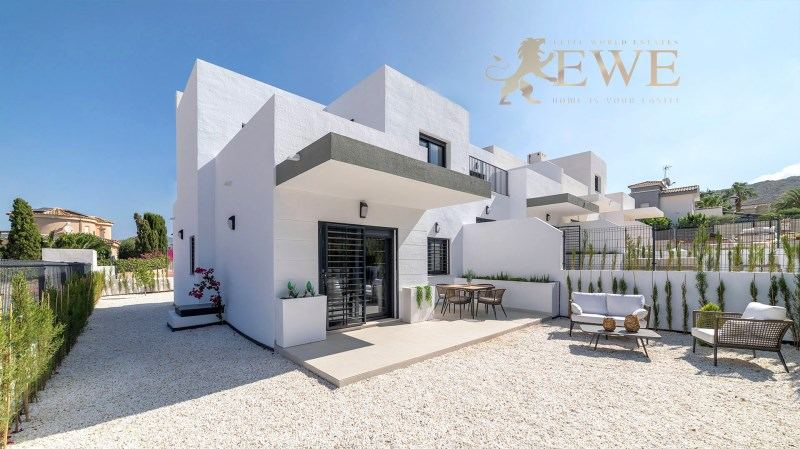
Busot
Modern semi-detached house in Busot, Alicante
409.000 €
3 dormitorios · 3 baños · 169 m²Ref. EWE2383
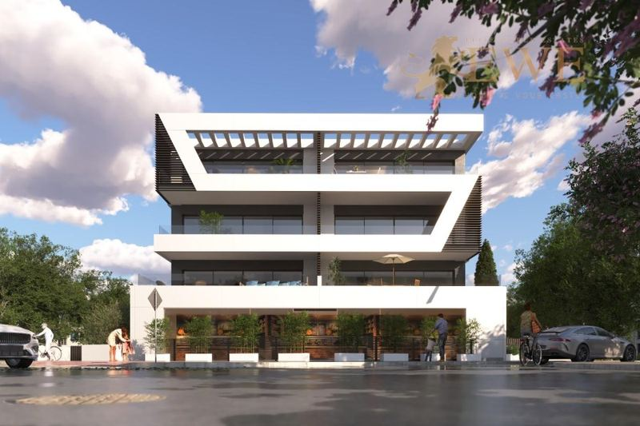
Sant Joan d'Alacant
Modern apartments in Sant Joan d'Alicant
413.000 €
2 dormitorios · 2 baños · 63 m²Ref. EWE3345
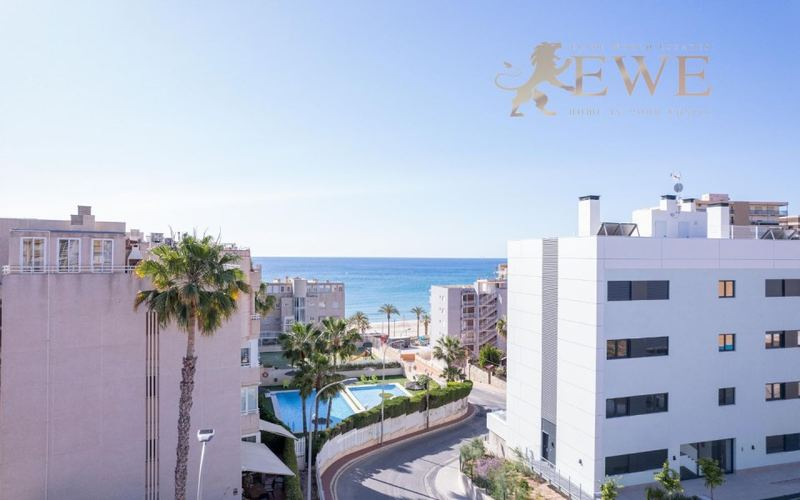
El Campello
Modern apartment close to the sea in El Campello, Alicante
420.000 €
3 dormitorios · 2 baños · 61 m²Ref. EWE3661
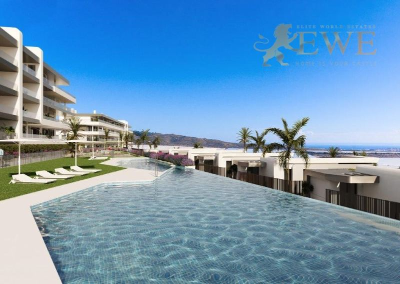
Mutxamel
Impressive penthouse overlooking golf course in El Campello
437.000 €
2 dormitorios · 2 baños · 76 m²Ref. EWE2429
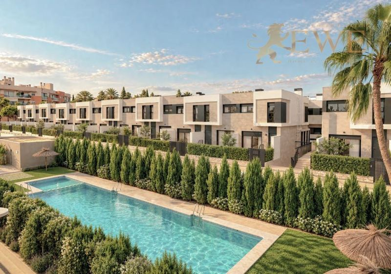
Entrega T1 2028Mutxamel
Modern Townhouses for Sale in Mutxamel, Alicante
440.000 €
3 dormitorios · 3 baños · 120 m²Ref. EWE3910
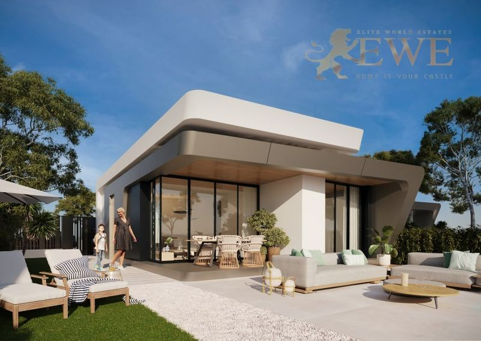
Mutxamel
Excellent villa near Alicante Golf in El Campello
460.000 €
3 dormitorios · 2 bañosRef. EWE2428
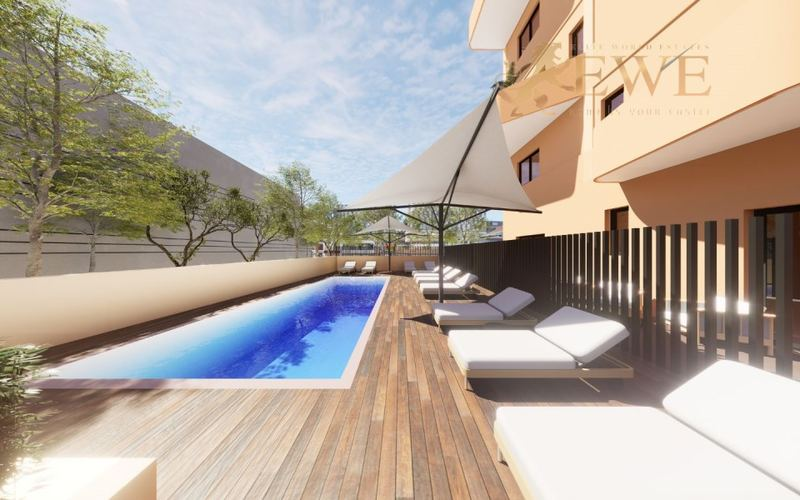
El Campello
Modern penthouse close to the sea in El Campello, Alicante
460.000 €
2 dormitorios · 2 baños · 51.19 m²Ref. EWE3662
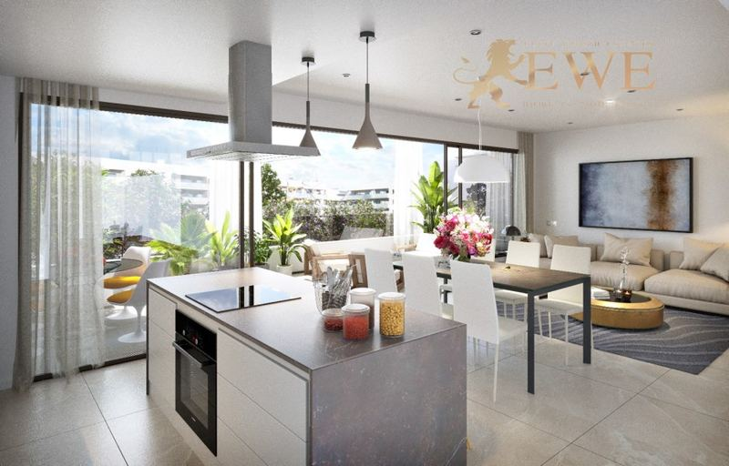
Sant Joan d'Alacant
Modern Coastal Apartments in San Juan de Alicante
470.000 €
3 dormitorios · 2 baños · 90 m²Ref. EWE3346
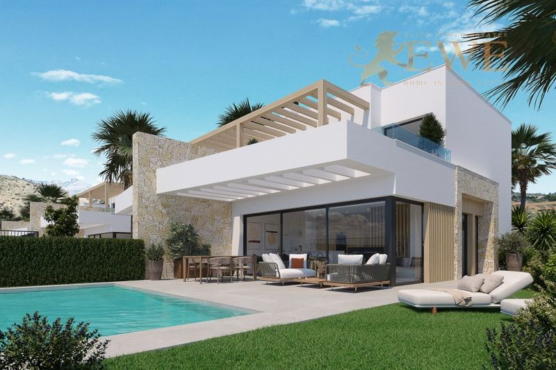
Monforte del Cid
Semi-detached villa with pool next to the golf course in Monforte del Cid
489.000 €
3 dormitorios · 2 baños · 118 m²Ref. EWE3572
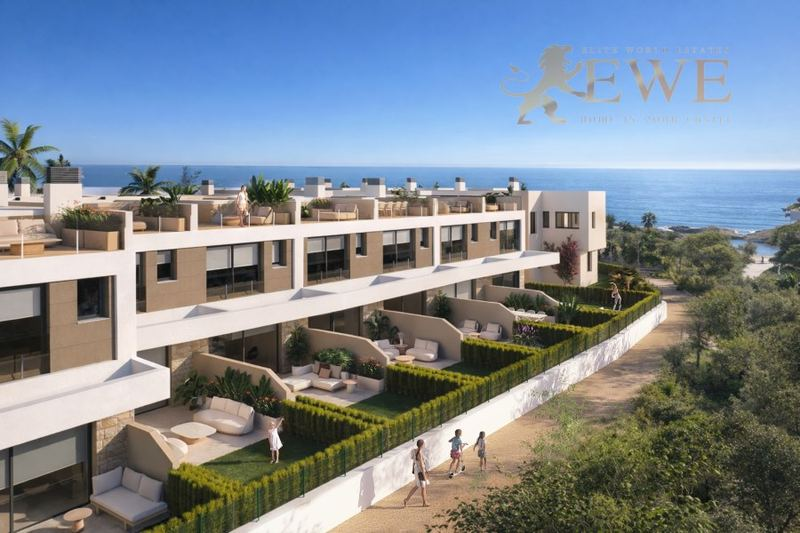
Entrega T4 2028El Campello
Luxury Townhouses on the Front Line of the Sea in El Campello
585.000 €
3 dormitorios · 3 baños · 96 m²Ref. EWE3768
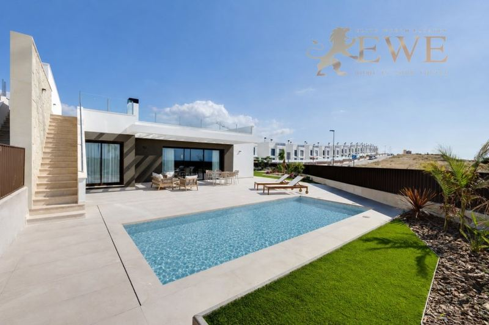
Mutxamel
Modern Villa with Private Pool at Bonalba Golf Resort
630.000 €
3 dormitorios · 3 baños · 121 m²Ref. EWE3755
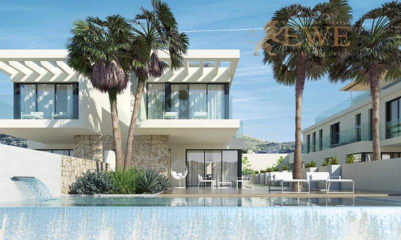
Monforte del Cid
Magnificent villa overlooking the Font del Llop golf course
895.000 €
3 dormitorios · 3 baños · 238 m²Ref. EWE3573
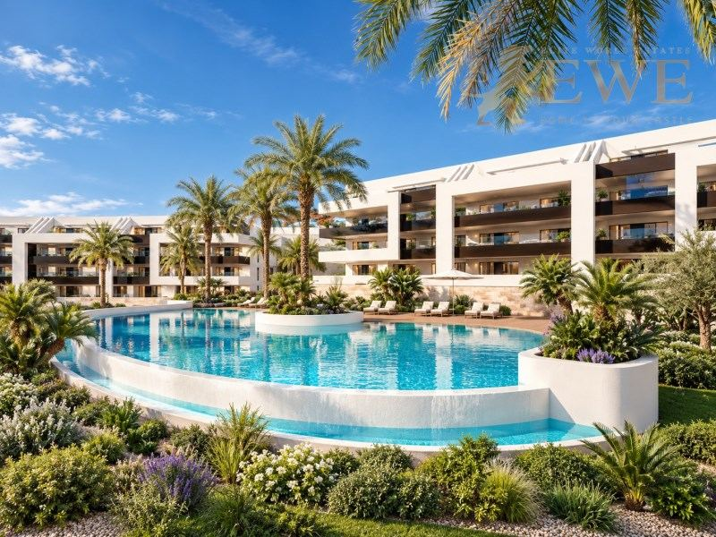
Mutxamel
New Apartments for Sale near Bonalba Golf Course in Alicante
Precio a consultar
2 dormitorios · 2 bañosRef. EWE3897
La ciudad
Vivir en Alicante
Alicante es la capital de su provincia y la mayor ciudad de la Costa Blanca, con unos 360.000 habitantes. Es una ciudad de verdad que vive todo el año: tiene aeropuerto internacional, puerto, universidad, grandes hospitales y el TRAM, que une el centro con las playas y los pueblos cercanos.
Sobre el casco antiguo se alza el Castillo de Santa Bárbara, en el monte Benacantil, con vistas a toda la bahía. Abajo, la Explanada de España, con sus palmeras y unos 6,6 millones de teselas en forma de ola, recorre el puerto deportivo junto a la playa del Postiguet. Al norte, la larga playa de arena de San Juan es donde muchos compradores empiezan a buscar.
Como aquí se vive, se estudia y se trabaja en todas las estaciones, el mercado del alquiler no se para después del verano. Por eso las nuevas promociones de Alicante se construyen para la vida diaria, con garaje, trastero, piscina comunitaria y buen aislamiento.
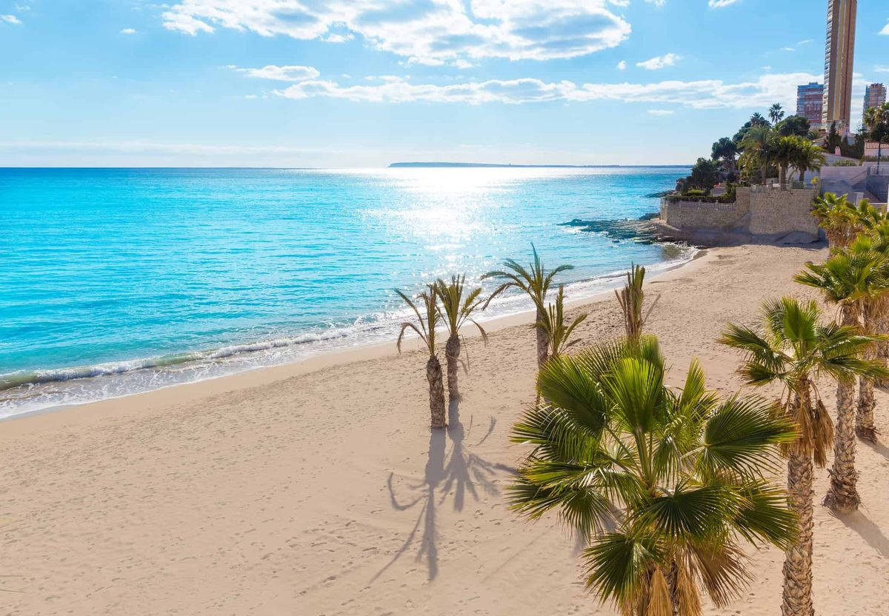
Dónde comprar
Las principales zonas de Alicante
Centro y Ensanche
Tiendas, restaurantes, la Explanada y la playa del Postiguet a pie. Sobre todo pisos en edificios antiguos y reformados, con alguna promoción nueva.
Playa de San Juan
Una larga playa de arena al norte de la ciudad, muy apreciada por familias y compradores extranjeros. Edificios más nuevos con piscina y el TRAM al centro.
Cabo de las Huertas
Un cabo tranquilo con pequeñas calas entre la Albufereta y San Juan. Villas y adosados, con algunos de los precios más altos de Alicante.
Albufereta
Una pequeña bahía con playa entre el centro y el Cabo de las Huertas. Pisos con vistas al mar, cerca del TRAM.
Bulevar del Pla
Una zona moderna con avenidas anchas, a unos 2 km de la playa del Postiguet y con parada de TRAM. Buena para vivir en la ciudad sin coche.
San Agustín y Villafranqueza
Barrios residenciales al norte del centro, a unos 3,5 a 6 km de la playa. Colegios y servicios cerca, y los precios más bajos en pisos nuevos.
Presupuesto
Cuánto cuesta comprar en Alicante
Al precio se suman impuestos y gastos. Para un piso nuevo de 272.400 €, por ejemplo, son 27.240 € de IVA y 3.814 € de AJD, más notaría, registro y abogado. En la segunda mano los impuestos son otros, así que pídanos siempre la cifra exacta de la vivienda que le guste.
| Obra nueva | 10 % IVA + 1,4 % AJD |
|---|---|
| Segunda mano | 9 % ITP, 11 % por encima de 1 millón de € |
| Notaría, registro, abogado | aprox. 1,5–2,5 % del precio |
| Cada año | IBI y gastos de comunidad, según la vivienda |
Preguntas
Comprar vivienda en Alicante: preguntas y respuestas
¿Cuánto cuesta un piso en Alicante?
En la ciudad nuestros pisos empiezan hoy en 211.000 €. La mayoría de los pisos de 2 o 3 dormitorios que vendemos en la ciudad cuestan entre 210.000 € y 410.000 €, según la zona, la planta y la distancia a la playa. Las casas cuestan más: nuestro adosado en el Cabo de las Huertas cuesta 1.225.000 €.
¿Cuál es la mejor zona para comprar en Alicante?
Depende del uso que le vaya a dar. Playa de San Juan y la Albufereta son para quien quiere la playa. El centro y el Bulevar del Pla, para vivir en la ciudad sin coche. San Agustín y Villafranqueza dan más espacio por el mismo dinero, y el Cabo de las Huertas es la zona de villas.
¿Es Alicante un buen lugar para alquilar?
Alicante tiene demanda todo el año de estudiantes, teletrabajadores, familias y gente que se muda a la ciudad, así que el alquiler de larga duración funciona bien. El alquiler vacacional necesita una licencia turística en el registro de la Comunitat Valenciana, y algunos edificios y zonas lo limitan, así que compruébelo antes de comprar.
¿A qué distancia está Alicante del aeropuerto?
El aeropuerto Alicante-Elche Miguel Hernández está a unos 20 minutos en coche del centro, con vuelos a la mayoría de las ciudades europeas todo el año.
¿Qué gastos hay además del precio?
En obra nueva se paga un 10 % de IVA y un 1,4 % de AJD. En segunda mano se paga un 9 % de ITP (11 % por encima de 1 millón de €). Notaría, registro y abogado suman alrededor de un 1,5–2,5 %.
¿Pueden comprar vivienda los extranjeros en Alicante?
Sí. Cualquier persona puede comprar una vivienda en España. Necesita un NIE y normalmente una cuenta bancaria española, y le ayudamos con las dos cosas. Consulte nuestra guía del NIE.


¿Busca casa en Alicante?
Cuéntenos su presupuesto y lo que necesita. Respondemos en un día laborable, en español, inglés, alemán o polaco.